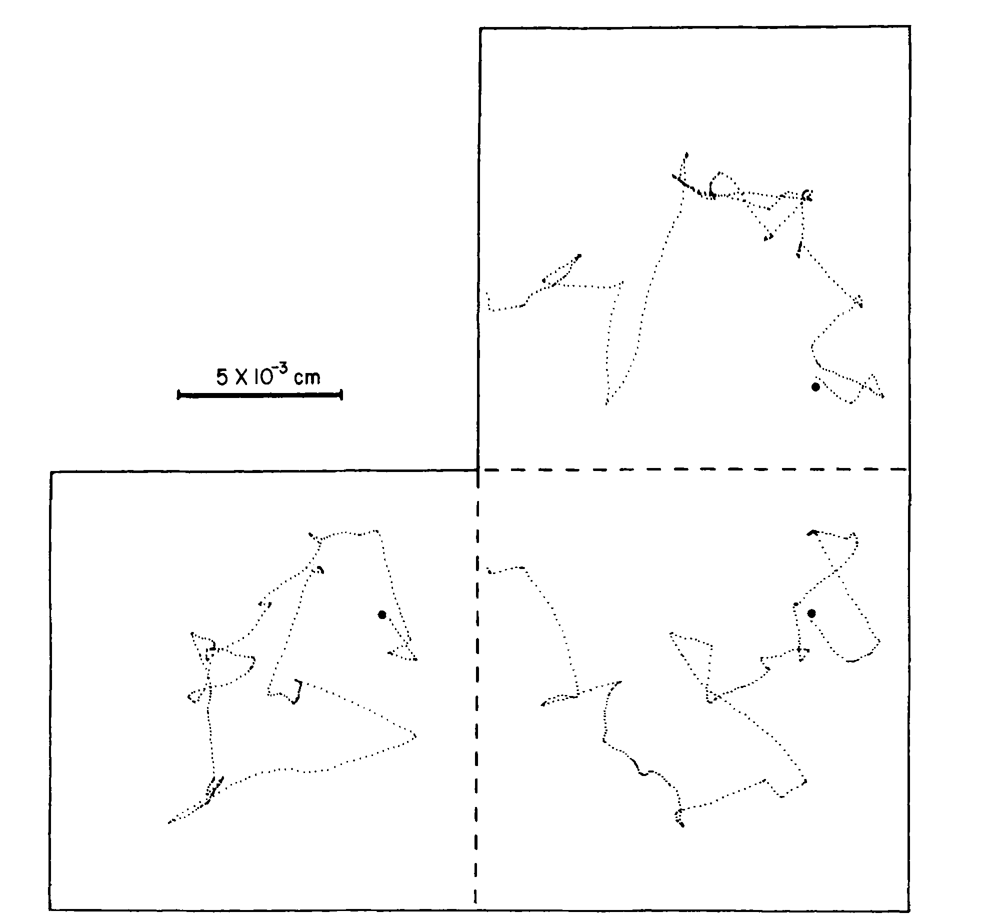
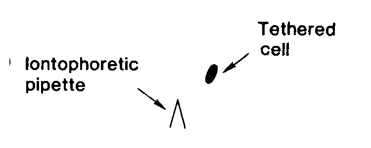
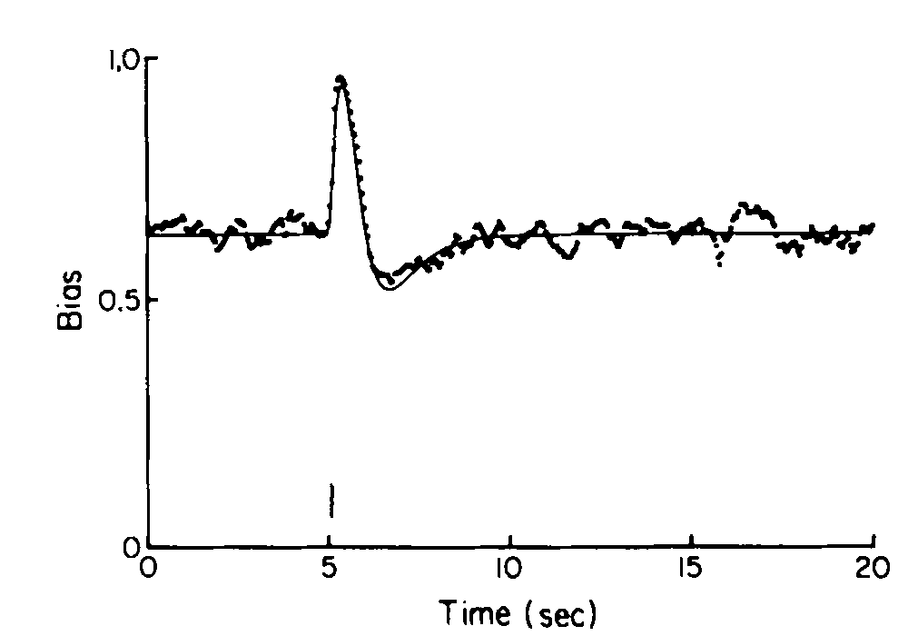
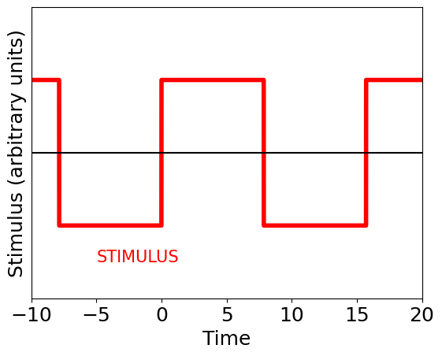
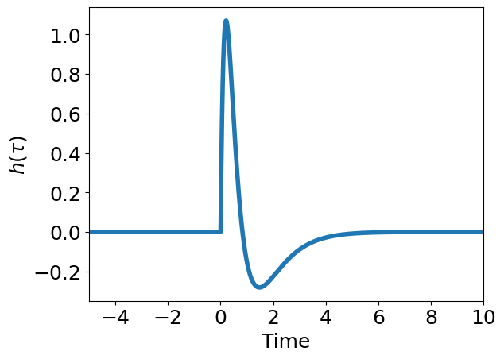
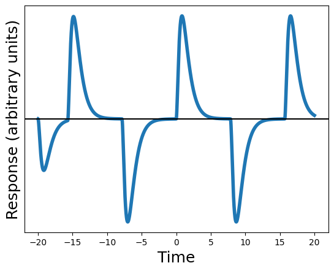
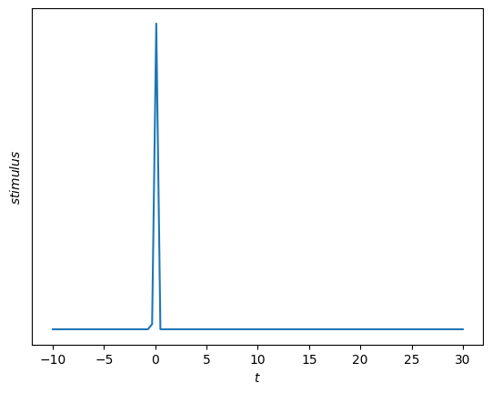
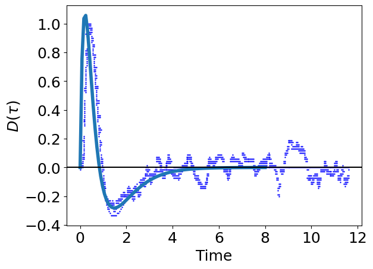
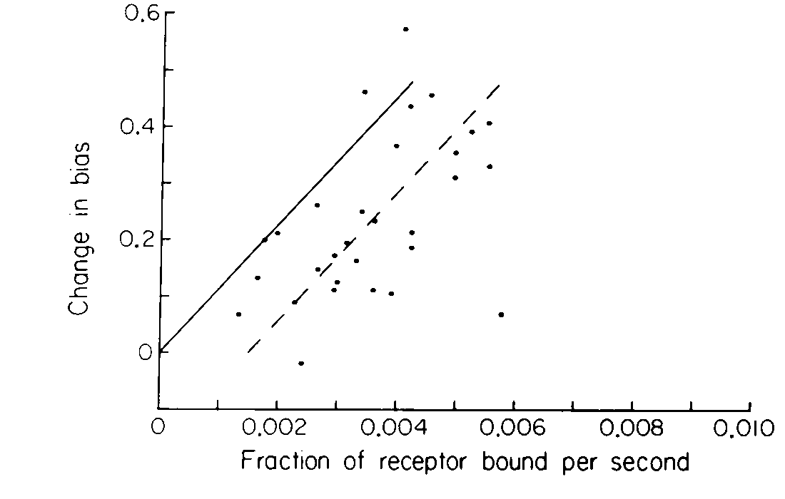
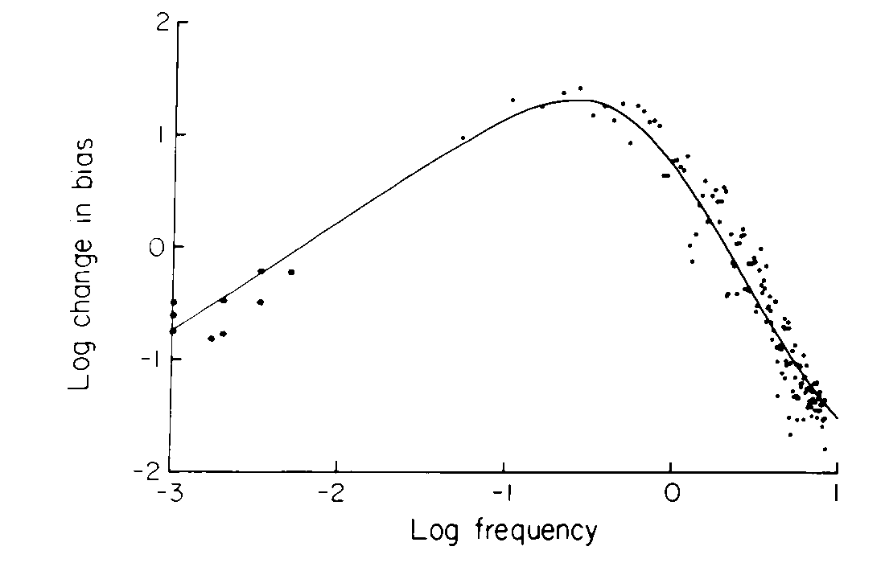

Swimming Cells motion
Swimming E. coli, phase contrast microscopy.
Why are runs at least one second long?

The cell is $10^{-4}$ cm in length.
The diffusion coefficient of a small molecule is $D= 10^{-5} \text{cm}^2 \text{s}^{-1}$
The time for a molecule to diffuse from one end of a cell to another is $\approx$ 1 millisecond.
The cell outruns diffusion when $v t > \sqrt{D t}$, or roughly one second.
Why are runs at least one second long?
For rotational diffusion about a single axis, $\left< \theta^2 \right> = 2D_r t$ where $D_r = k_B T/f_r$.
The rotational frictional drag cofficient of a sphere or radius $a$ is $f_r = 8 \pi \eta a^3$
In 1 sec, a 1 $\mu$m sphere diffuses about 30$^\circ$.
A cell cannot increase its integration time with longer runs because it ``forgets'' its direction
Tethered Cells
CCW → runs
CW → tumbles
The impulse response


Expose a cell to a short impulsive stimulus (aspartate pulse)
A biphasic response is obtained.
The CCW bias rises rapidly, returns to baseline after one second, falls below baseline, and returns to baseline after another 3 seconds
The impulse response is a weighting function if the system is linear, when changes in response are proportional to changes in stimulus: $\Delta r(t) \propto \Delta s(t)$
Linear filters



The response at each time is a weighted sum of stimulus values at earlier times
\begin{align*}
r=r_0 + \int_0^\infty d\tau h(\tau) s(t-\tau)
\end{align*}
$r_0$ is background firing when $s = 0$.
$h(t)$ is a weighting factor that determines how the stimulus at time $t-\tau$ affects the response at time $t$.
Non-linear mappings
Functionals map functions to other functions
\begin{align*}
s(t) \mapsto r(t)
\end{align*}
The \textbf{Volterra expansion} is the functional equivalent of the Taylor series expansion. This generates a power series approximations of functions:
\begin{align*}
r(t) = r_0 + \int d\tau h(\tau)s(t-\tau) + \int d\tau_1 d\tau_2 h_2(\tau_1, \tau_2)s(t-\tau_1)s(t-\tau_2) +\\
\int d\tau_1 d\tau_2 d\tau_3 h_3(\tau_1, \tau_2, \tau_3)s(t-\tau_1)s(t-\tau_2)s(t-\tau_3)...
\end{align*}
We call $h$ the "linear filter", "first Volterra kernel," or just the "kernel".
\begin{align*}
r-r_0 = \int_0^\infty d\tau h(\tau) s(t-\tau)
\end{align*}
Measuring the kernel with an impulse response

\begin{align*}
s(t)= \frac{1}{(2 \pi \sigma^2)^{1/2}}e^{-t^2/2\sigma^2}
\end{align*}
In the limit that $\sigma \rightarrow 0 $, the Gaussian function approaches a delta function:
\[ \int_{-\infty}^{\infty} f(\tau)\underbrace{s(\tau-t)}_{\approx\,\delta(\tau-t)}d\tau\approx f(t) \]
If the stimulus is sharply peaked at $t=0$, then the response to the stimulus reflects the value of the kernel at one point:
\begin{align*}
r-r_0 & \propto \int_0^\infty d\tau\, h(\tau) \delta(t-\tau) \\
&\propto h(t)
\end{align*}
when $s(t)\propto\delta(t)$.
The bacterial impulse response

Fit to sum of four exponentials:
Area of positive lobe equals area of negative lobe
\begin{align*}
\int_0^\infty h(t)dt = 0
\end{align*}
The impulse response positively weights the most recent 1 second of any stimulus waveform and negatively weights the preceding 3 seconds.
Calculating a derivative
\[ r(t) \approx s(t-1) - s(t-3) \]
Thus, $r(t) \approx ds/dt$
Temporal Comparisons in Bacterial Chemotaxis
The impulse stimulus resembles the time-derivative of the step stimulus → $s_{impulse} \propto \frac{ds_{step}}{dt}$
So the impulse response must resemble the time-derivative of the step response → $r_{impulse} \propto \frac{dr_{step}}{dt}$
Temporal filtering
Any periodic stimulus can be written as a Fourier series:
\[ s(t) = \sum_{n=-\infty}^\infty\hat{s}(\nu_n)e^{-2\pi i (n/T)t} = \frac{a_0}{2} + \sum_{n=1}^\infty \left[ a_n \cos{\left(\frac{2\pi n t}{T} \right)} + b_n \sin{\left(\frac{2\pi n t}{T} \right)} \right] \]
Decompose a stimulus into sine and cosine waves
Compute the linear mapping of each sine and cosine wave to a response
Reassemble the total response from the original Fourier coefficients
Our linear filter roughly differentiates a sinusoidal stimulus and behaves like a bandpass filter
Temporal sensitivity

Change in bias as a function of
time rate of change of fraction of receptor bound.

log(change in bias) as a function of
log(stimulus frequency).